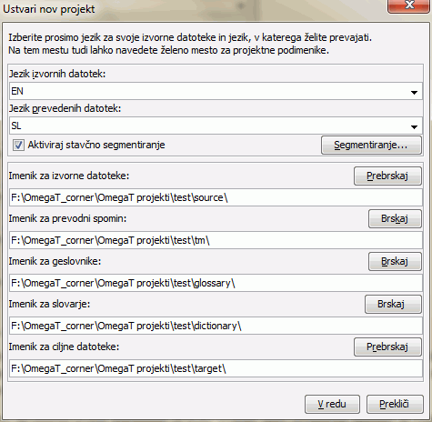

Ta kratek priročnik za hitri začetek opisuje samo najbolj osnovne stvari. V idealnem primeru bi moral vsak uporabnik prebrati navodila za uporabo in se z njihovo pomočjo seznaniti z vsem, kar nam OmegaT nudi. Bližnjice na tem mestu opisujemo s konvencijo "ctrl+tipka", uporabniki Mac računalnikov naj pod tem razumejo in uporabljajo "cmd+tipka". Tipka "cmd" je na tipkovnicah Apple označena z "jabolkom"
Zaslon OmegaT sestavljajo tri ločena okna. Vsakega od njih lahko z miško večate in manjšate. Na levi strani je urejevalnik, v katerega vnašate svoj prevod. Desno zgoraj je prikazovalnik zadetkov, kjer bodo prikazani zadetki iz prevodnega spomina. Pod njim se nahaja prikazovalnik slovarjev, kjer se bodo kazali zadetki iz slovarjev.
V urejevalniku prikazuje OmegaT izvorno besedilo 'segmentirano' v povedi (ali v odstavke). Segmente prevajate po vrsti, drugega za drugim. Ko preidete z enega segmenta na drugega, se vaš prevod shrani v prevodni spomin. Ko so enkrat vsi segmenti prevedeni (ali pa prej, če tako zahtevate), bo OmegaT s pomočjo prevodnega spomina ustvaril v mapi "Target" dokumente v ciljnem jeziku.
OmegaT vaše prevajalsko delo organizira v tako imenovane prevajalne projekte. Za vsakega od njih OmegaT ustvari svoj komplet map. V njih shranjujete izvorne dokumente, ki jih je treba prevesti, geslovnike in pa prevodne spomine, ki jih boste morebiti potrebovali. OmegaT ustvari tudi ciljno mapo “Target”, ki bo vsebovala prevedene dokumente.
- v ta namen v meniju izberite Projekt → Nov...
Zakrmarite do mape, v katero bi želeli shraniti projektne datoteke, in vnesite ime za prevajalni projekt. Ime, ki ga vnesete, bo tudi ime projekta in projektnega imenika, v katerega se bo shranjevalo vse s prevajanjem zvezane datoteke.
OmegaT vas bo z dvogovorom spodaj pozval, da potrdite ali pa spremenite projektne mape, ki jih bo ustvaril.

Mesti za podimenike lahko potrdite, vendar prej preverite, ali kodiranji za izvirni in ciljni jezik ustrezata. V spustnem seznamu izberite kodo jezika (2 črki) ali kodo jezika in države (2 + 2 črki), lahko pa ju vnesete ročno (koda za jezik ima lahko 2 ali 3 črke). Zapomnite si, kje se nahaja mapa Target (s prevedenimi datotekami). Če želite, da OmegaT namesto po odstavkih segmentiranje izvede po povedih, znova preverite pravila za segmentiranje.
Ko kliknete V redu in s tem potrdite nastavitve projekta, vas OmegaT pozove, da izberete izvirne dokumente za uvoz. Uvažate lahko posamezne datoteke ali celotne hierarhije (imenike in podimenike). Če uvozite napačne dokumente ali preveč dokumentov, jih lahko enostavno odstranite iz mape z izvirnimi datotekami (na primer s pomočjo sistemskega upravitelja za datoteke).
Seznam datotek, ki se jih bo prevajalo, lahko preverite v oknu Projektne datoteke (Meni: Projekt → Projektne datoteke..., v kolikor se ne prikaže sam od sebe). Če ste primorani spremeniti vsebino imenika Source, ne pozabite pred nadaljnjim delom ponovno naložiti projekta (Meni: Projekt → Ponovno naloži). OmegaT samodejno odpre prvo datoteko na seznamu. Pomnite, da lahko OmegaT prevaja datoteke v spodaj navedenih formatih samo, če ustrezajo vzorcem v datotečnih filtrih. Druge datoteke bo pri odpiranju prezrl.
- OpenDocument/OpenOffice.org
enostavno besedilo
.po
bundle.properties Java
XHTML, HTML
datoteke za HTML Help Compiler
INI (Ključ=vrednost kot besedilo)
DocBook
datoteke Microsoft Open XML
Okapi enojezični XLIFF
QuarkXPress CopyFlowGold
datoteke za podnaslove (SRT)
ResX
podporne datoteke za Android
LaTeX
Ko določite projekt in datoteke, ki jih je treba prevesti, OmegaT odpre prvo datoteko na seznamu.
Aktivni segment je označen zeleno, pod njim je v "ciljnem polju" kopija izvirnega besedila. (V tem trenutku so vsa besedila, ki se nahajajo izven ciljnega polja zavarovana in jih ne morete spreminjati ) Med oznaki <segment 0001> in <end segment> morate čez izvorno besedilo vtipkati svoj prevod. Pritisnite na "ENTER", da skočite na naslednji segment. Opomba:
- Da skočite na katerikoli drug del besedila, bodisi zgoraj bodisi spodaj, dvokliknite na stavek ali odstavek, ki ga želite odpreti.
- V kolikor raje začnete prevajati s praznim poljem za prevod, si lahko to nastavite s pomočjo Možnosti → Vedenje pri prevajanju....
Nastavitve okna za urejanje (na primer, kako se prikazuje izvorno besedilo, kako se poudari prevod ipd.) lahko spremenite v podmeniju Prikaz
Ko pritisnete na "ENTER", se pripeti par stvari, ki jih ni videti : OmegaT doda oba dela segmenta (izvorni del in njegov prevod) v prevodni spomin, poleg tega pa sam od sebe prevede še ostale identične segmente, ki jih je najti v ostalih datotekah projekta Hkrati preišče prevodni spomin in slovar ter zbere predloge za naslednji neprevedeni segment.
Če OmegaT za naslednji segment v prevodnih spominih, ki so na razpolago, naleti na nepopolna ujemanja (30 % ali več, glej priročnik), jih bo navedel v prikazovalniku zadetkov. Prikazovalnik zadetkov samodejno označi prvi zadetek na seznamu.
Skladanja lahko v ciljno polje vnesete iz prikazovalnika s pomočjo bližnjic:
Pritisnite Ctrl+I, če želite zadetek vstavite na mestu, kjer se trenutno nahaja kazalka, ali pa ...
pritisnite Ctrl+R in prepišite z zadetkom ciljno besedilo v celoti.
V kolikor je na razpolago več zadetkov, pa bi želeli kaj drugega kot predizbrani zadetek:
Izberite v prikazovalniku zadetek, ki ga želite: s Ctrl+2 drugi, s Ctrl+3 tretji prikazani zadetek, itd.
Uporabite potem bližnjici Ctrl+I ali Ctrl+R, kot je opisano zgoraj.
(OmegaT lahko tudi naročite, naj vsak zadetek, ki je nad nastavljenim odstotkom skladanja, sam od sebe vstavi v ciljno polje, ko odpre nov segment. To možnost imate na razpolago v Možnosti → Vedenje ob urejanju..)
Zadetki v geslovnikih in slovarjih, ki ste jih dodali projektu, vam bodo na razpolago v podoknih za slovarje in za geslovnike.
OmegaT nudi krepko zalogo funkcij za iskanje. Odprite iskalno okno z Ctrl+F in vtipkajte besedo ali izraz, ki ga iščete, v polje "Išči:". Lahko tudi v ciljnem polju aktivnega segmenta izberete besede ali izraz, potem pa pritisnete na Ctrl+F. V tem primeru bo program iskani izraz ali besedo sam vnesel v polje "Išči".
Ctrl+M ga lahko vstavite v ciljni segment.Ko prevedete vse segmente (po potrebi tudi prej), OmegaT na podlagi prevodov, ki jih je shranil v spomin, obnovi vse izhodne dokumente. Da ustvarite ciljne dokumente, izberite v glavnem meniju Projekt -> Ustvari prevedene dokumente. OmegaT sestavi prevode vseh datotek v projektnem imeniku Source, ne glede na to, ali so prevedene v celoti. Delne ali v celoti prevedene datoteke nato shrani v projektni imenik Target. Prevajanje zaključite s pregledom ciljnih datotek v ustrezni aplikaciji (brskalniku, urejevalniku besedil...) , da se prepričate, da je vsebina in oblikovanje prevoda v redu. Po potrebi lahko znova odprete OmegaT, opravite potrebne spremembe in znova ustvarite izhodne datoteke.
OmegaT pazi na to, da se oblikovanje izvirnih dokumentov (krepka ali ležeča pisava itd.) med prevajanjem ne zgubi, zato ukaze za oblikovanje spremeni v oznake. Oznake OmegaT vsebujejo eno ali dve črki z eno ali več ciframi in pri parih oznak z znakom "/" (na primer: <f0>, </f0> <br>, </s2> itd.). Pri delu z oznakami morate paziti na to, da bodo v ciljni segment vključene na pravilnem mestu in v pravilnem zaporedju (glejte operacije z oznakami).
V teh primerih so oznake označene z barvo, da jih je laže prepoznati; OmegaT jih ne bo posebej poudarjal. Oznake modre barve bo OmegaT ignoriral, ker v celoti obkrožajo segment. Oznake, poudarjene zeleno, mora OmegaT obdelati, ker se nahajajo znotraj segmenta. Tukaj je primer za segmentiranje v HTML:
<p>A different display font can
be selected via the<b>Display
Font</b>dialog. Open it via
the<i>Settings</i> →<i>Display
Font...</i>menu item. The font type and
size can be changed from the dialog.</p>
OmegaT bo ta stavek (preveden v afrikanščino!) prikazal takole:
Ko OmegaT ustvari ciljno besedilo, bo HTML videti takole:

OmegaT napačnih oznak v ciljnem dokumentu ne zazna samodejno. Preden prevod predate stranki, torej preverite, ali je besedilo brez napak. Uporabite v ta namen točko v meniju točko Orodja → Preveri oznake . Prikazal se bo seznam segmentov, kjer prihaja do neskladja med oznakami v izvirnem besedilu in v prevodu. Kliknite na številko segmenta. V oknu urejevalnika se bo prikazal segment, ki vsebuje napake, tako da boste lahko oznake preverili in po potrebi popravili. Pritisnite na Enter, da popravljen segment potrdite, nato pa ponovno preverite popravek s tem, da pritisnete znova na Ctrl+T,
V nekaterih primerah lahko napake v oznaka tudi preprečijo, da bi prevod sploh lahko odprli. Preverite zato naprej oznake, preden začnete z ustvarjanjem ciljnih datotek. Na koncu dokument in njegovo oblikovanje še dodatno preverite v urejevalniku ali v pregledovalniku za to vrsto dokumenta.
| Pravni poduk | Domov | Kazalo |